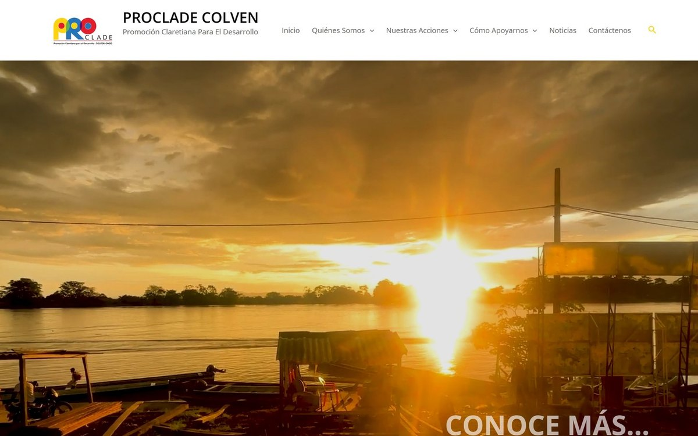
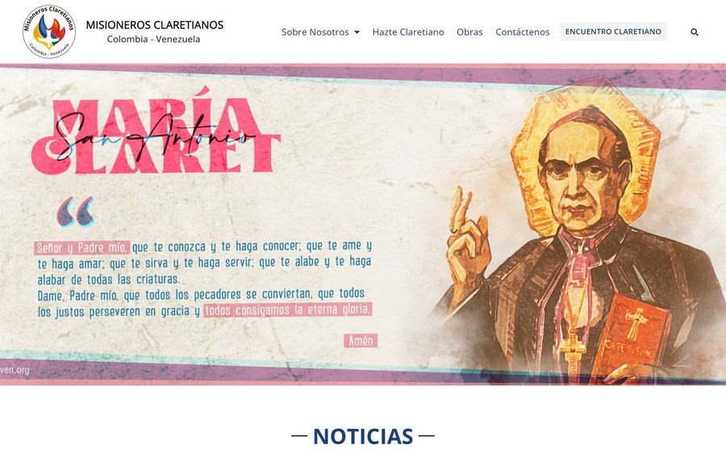

Web institucional · WordPress
Proclade Colven & Misioneros Claretianos
Diseñé y mantuve los dos sitios institucionales de la ONGD en WordPress con Elementor: arquitectura de contenidos, layouts responsive y un sistema de plantillas que permite al equipo publicar sin depender de mí.
−50% tiempo de gestión
En producción